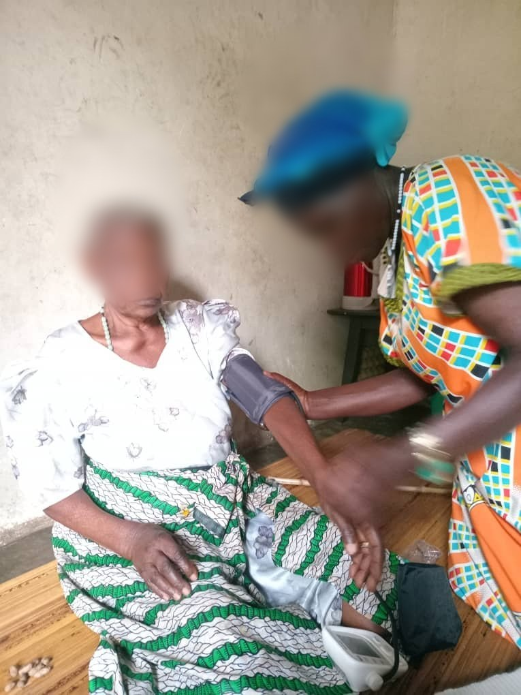
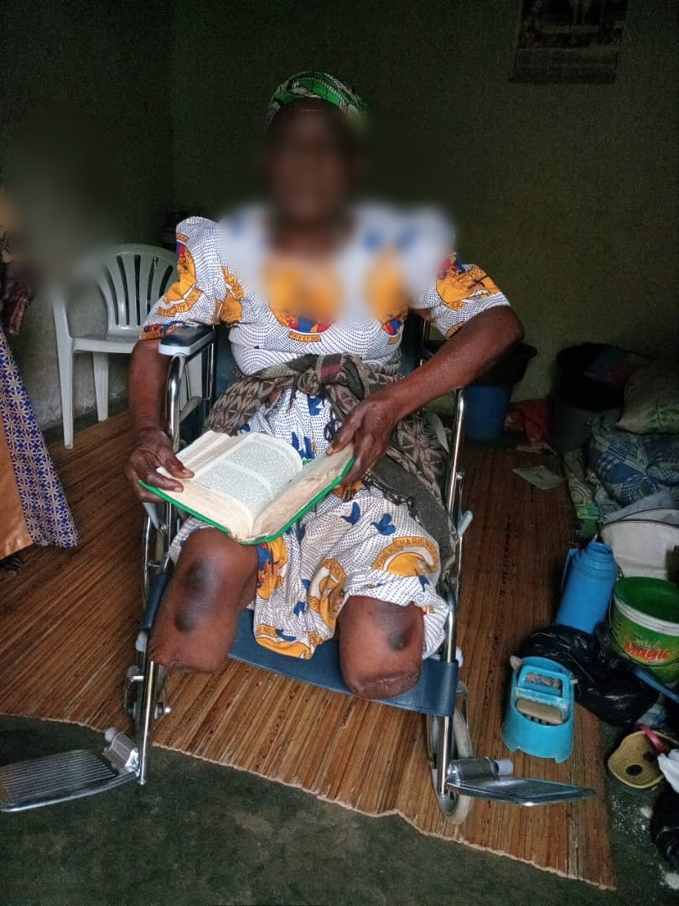
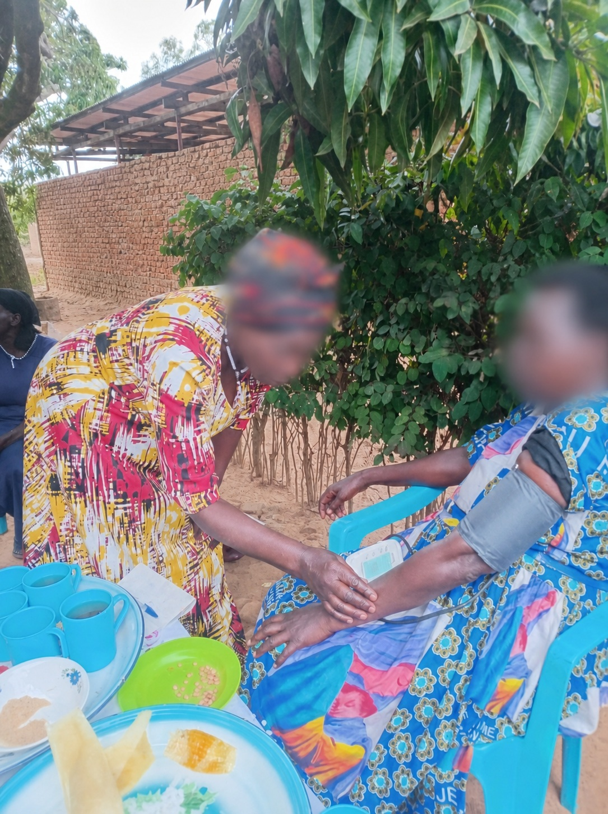

About the organization
West Nile Hope & Resilience Initiative
Faith-based care for dignity, hope, and resilience in West Nile.



Mission and vision
Practical care. Close to home.
Founded by Nyolonga Colbert, WNHRI supports vulnerable communities with dignity-first service.
- Compassion and love
- Integrity and transparency
- Accountability and stewardship
- Respect for human dignity